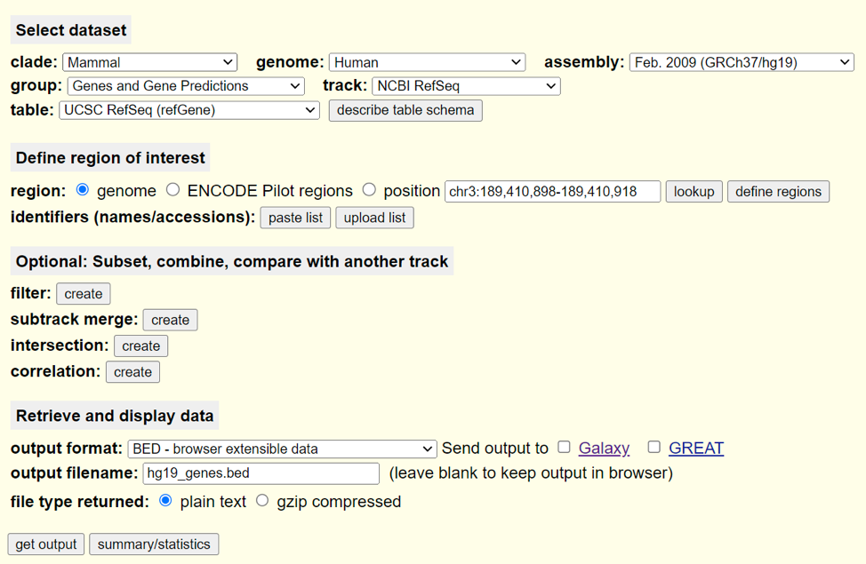

Project 3: ChIPseq analysis of the human transcription factor Runx1
Similar to advancing gene expression quantification from microarrays to RNA-seq, next-generation sequencing also revolutionized other wet lab assays that examine nucleotides by making them (relatively) unbiased and high-throughput. One such set of technologies are protein-DNA binding assays including ChiP-qPCR and ChIP-ChIP which use antibodies and immunoprecipitation to capture chromatin bound by a specific protein of interest. Chromatin Immunoprecipitation Sequencing (ChIP-seq) is a technique that identifies genome-wide DNA binding sites with transcription factors and other proteins of interest by sequencing the DNA fragments isolated from protein-DNA complexes.
Barutcu et al. (2016) used RNA-seq, ChIP-seq, and HI-C to investigate the role of Runx1 in the MCF7 cell line, a model line used for the study of breast cancer. In this project, we will reproduce several results from Supplementary Figure 2 and Figure 1, which comprise common preliminary analyses of ChIP-seq data. Each group will process the ChIP-seq data from raw reads to called peaks, incorporate the provided RNA-seq data and ultimately attempt to reproduce the findings found in the paper.
Upon completion of project 3, students will be able to do the following:
- Align reads to the human reference genome using BowTie2
- Perform peak calling analysis and annotation with HOMER
- Perform motif analysis using HOMER
- Generate genomic visualizations using DeepTools, and IGV
- Understand the basics of how to use Snakemake to automate a simple workflow
Please note that the methods for the original paper are ambiguous in important areas. For this project, on occasion, you will be asked to define certain parameters and explain your choice. It is important to remember that even if the authors had specified a specific value for certain parameters, that does not mean that is the single correct option. We base our choice of these parameters on our background knowledge and rational assumptions. Do your best to pick reasonable values and justify them.
Contents:
- 1. Read the paper & supplemental methods and create a workflow diagram for your role
- 2. Read Alignment and Mapping Statistics
- 3. Peak Calling and Annotation using Homer
- 4. Generating bigWig file for correlation analysis and visualization
- 5. Integration with HIC and RNAseq data
1. Read the paper & supplemental methods and create a workflow diagram for your role
Everyone
As for previous projects, read through your own section’s instructions and attempt to generate a simple, conceptual workflow diagram. For your report, you will work as a group to connect all of your sections’ diagrams into one overarching project workflow. These diagrams should include all major steps of the analysis and be linked in a manner that demonstrates their dependencies on other steps. Keep these diagrams simple with boxes representing what analysis / step is occuring and arrows or lines showing the dependencies between steps. Do not worry about making these diagrams aesthetically perfect, you may quickly make such diagrams in PowerPoint or any other appropriate software of your choosing. You only need to include the full workflow diagram detailing the entire project in your report.
It might be helpful when you are first starting to individually make diagrams that include all of the steps for your role in order to understand the process you will be following (even the non-necessary steps). Then, when you are working in a group to combine them, you can come to a consensus as to which steps are superfluous for the sake of reproducing the results and which are essential.
Please note that there is an inherent level of subjectivity in the generation of these diagrams. We are not looking for any one specific diagram / diagram structure. We only care that you represent the major steps of the analysis and that you connect them in a way that illustrates the order in which they must be performed. Our intent with the generation of these diagrams is to help you visualize and understand all of the key steps that go into a particular analysis and how your role connects and depends on the others.
2. Read Alignment and Mapping Statistics
Lead Role: Data Curator The data you will be working with consists of two ChIP-seq experiments, typically termed the IP or pulldown samples, with matching input controls for a total of 4 samples or FASTQ files. We have downloaded and processed three out of the four files already, and you will be responsible for downloading the last and generating a snakemake workflow that will process it in the same manner as the others. Your first step will be to download GSM1942111 (SRR2919475) from the GEO accession GSE75070. The sample itself is referred to as the ‘MCF-7 wildtype RUNX1 ChIPseq Replicate1 Pulldown’. You may use whatever strategy you like to download the appropriate FASTQ file. Load all of the necessary components in modules before running snakemake. Though there are many workflow management tools, we will be using Snakemake as its syntax is highly similar to Python, a programming language you already have experience using. We have provided a skeleton snakemake file that will demonstrate and explain some of the basic concepts. Utilize information from the provided example snakefile called example.snake as well as the official Snakemake tutorial (https://snakemake.readthedocs.io/en/stable/tutorial/basics.html) to generate a Snakemake workflow to run all of the steps below:
Run FASTQC on the FASTA file
Run Trimmomatic with the default settings suggested by Trimmomatic. Use the adapter fasta file we have provided for you located here: /project/bf528/project_3_chipseq/references/TruSeq3–SE.fa
Align the FASTQ file against the provided hg19 human genome reference using BowTie2. The original publication did not specify if they adjusted any of the many optional parameters available. The BowTie2 manual describes several “pre-set” options that adjust various alignment parameters. You may look into and choose one that you think is appropriate or you may use default parameters. The pre-built index may be found here: /project/bf528/project_3_chipseq/references/GRCh37.p13.genome.bowtie2
Use Samtools flagstat to output a short summary of mapping statistics to a .txt file
Use Samtools sort to produce a sorted BAM file Run Samtools index on the sorted BAM file to create a .bai (BAM index) file
-
Run MultiQC to produce a convenient report of the quality metrics from all steps
We have provided you with the alignments for the other 3 samples as BAM files in /projectnb/bf528/project_3_chipseq/provided_files/. For convenience and clarity, they are named runx1_rep2_sorted.bam, inp_rep1_sorted.bam, and inp_rep2_sorted.bam. Separately, use Samtools to output the same mapping statistics as in 2.4. Create a table similar to the one seen in Supplemental Figure 2b.
Run Samtools flagstat to produce mapping statistics for the other provided files. You are welcome to incorporate this into your Snakemake workflow, but it is not necessary.
Deliverables:
A sorted BAM file of alignments for SRR2919475
A BAM index for the sorted BAM file
Table of mapping statistics for all 4 BAM files
Relevant FASTQC quality plots from MultiQC
The completed Snakemake workflow (snakefile) that produces the above deliverables
3. Peak Calling and Annotation using Homer
Lead Role: Programmer We will now use the alignments from BowTie2 to perform peak calling using the program HOMER. The data curator will provide you with one of the sorted, indexed BAM files and we have provided you with the others. You will ultimately use these BAM files to first generate TAG directories (HOMER re-formats some of the BAM data into a unified format it uses for the rest of its utilities), call peaks, produce a set of “reproducible peaks” and remove blacklisted signal-artifact regions from your peak list. After generating tag directories for each BAM file, you will run the findPeaks utility twice to produce two sets of peak files for each experiment (match the replicate numbers for the IP and Inp). The authors of the publication performed the ChIP-seq analysis separately for each experiment and then generated a single set of “reproducible” peaks (Supp. Fig 2a). They do not disclose in their methods what procedure was used to generate this set. In general, there are two main ways that “reproducible” peaks are chosen for ChIP-seq experiments: 1. Irreproducible Discovery Rate (IDR), and 2. Intersections / Unions of peaks. You will use the latter strategy and Bedtools to produce your own set of “reproducible peaks” from the two replicate experiments provided. Once you have generated this list of “reproducible” peaks, you will remove any known blacklisted signal-artifact regions, annotate your filtered peaks to their nearest genomic feature, and perform motif finding to analyze what other cofactors may be binding in your discovered peaks.
To allow you to get started writing and testing your code, you may use the files found in /projectnb/bf528/project_3_chipseq/provided_files/ as a starting point. Specifically, you can use the runx1_rep2_sorted.bam and inp_rep2_sorted.bam to start the analysis for the second set of the replicates from the study. The data curator will provide you with a sorted, BAM file for the alignments for the first replicate pulldown which you will then use in conjunction with the provided inp_rep1_sorted.bam to process the first set of replicates.
Load the require modules: Homer, Bedtools
Generate TAG directories using the makeTagDir command in HOMER. You can run this step with default parameters for every option. You may refer to the official instructions found here: http://homer.ucsd.edu/homer/ngs/tagDir.html
Run the findPeaks utility in HOMER.The official documentation for the findPeaks utility may be found here: http://homer.ucsd.edu/homer/ngs/peaks.html. Make sure you use the
-style factormode. N.B. You will want to run this twice (once for each pair of IP and Inp replicates).The findPeaks utility outputs a HOMER formatted text file. Use the pos2bed HOMER utility to convert your peak files to BED files.
You will have two sets of peak BED files from the previous steps. For this step, using only Bedtools, produce a single set of “reproducible” peaks in BED format. Justify and explain your strategy for defining “reproducible” peaks in your written report. Create a simple venn diagram indicating the original number of peaks called in each replicate, and the number of “reproducible” peaks you determined. See Supplemental Figure 2c for reference.
Use BedTools to remove any peaks from your list based on the provided blacklist located here: /project/bf528/project_3_chipseq/references/hg19_blacklist.bed. Make sure to note in your written report how many peaks remain and were removed from your list of “reproducible” peaks after filtering using this blacklist.
Using the annotatePeaks.pl utility in HOMER, annotate your list of filtered “reproducible” peaks to their nearest genomic feature. This utility will generate a simple TSV / .txt file of the results. From the annotations, produce a simple, labeled pie chart showing the percentage of “reproducible” peaks falling into the known genomic region features (intron, intergenic, TSS, TTS, etc.). Refer to the original figure 2a in the paper.
The authors of the paper used MEME-ChIP to perform motif finding using their “reproducible peaks” but they do not disclose the specific parameters used to run the analysis. Additionally, MEME–ChIP requires the input file to be a FASTA file of the extracted genomic regions covered by the peaks. For our purposes, we will use the findMotifsGenome.pl utility in HOMER to perform motif finding using your “reproducible peaks” BED file after it has been filtered using the ENCODE blacklist. The official documentation for the findMotifsGenome utility is here: http://homer.ucsd.edu/homer/ngs/peakMotifs.html.
OPTIONAL: If you are looking for an extra challenge, you may instead attempt to use MEME-ChIP to perform motif finding as they did in the paper. In general, you will have to figure out how to do the following:
- Extract chromosome sizes from the hg19 reference
- Determine the average size of your peaks
- Use your chromosome sizes, the average size of your peaks, and BedTools to make a BED file containing all of your peaks expanded to around ~500bp in size.
- Extract the DNA sequences from the regions in your BED file from the provided bgzipped genomic FASTA reference for hg19.
- Run MEME-ChIP using your fasta file of DNA sequences covered by your peaks
Deliverables:
A venn diagram indicating how many peaks were discovered in each replicate experiment with the intersection representing the number of “reproducible” peaks your strategy resulted in.
A single BED file of “reproducible” peaks from the two replicate experiments filtered for signal–artifact regions
A txt file of your filtered “reproducible” peaks annotated to their nearest genomic feature A pie chart showing the relative proportions of “reproducible” peaks annotated to genomic features (intron, intergenic, TSS, TTS, etc.)
Summarize the top ten enriched motifs from the output of HOMER or MEME-ChIP. Both of these utilities output a directory containing multiple files of results.
4. Generating bigWig file for correlation analysis and visualization
Lead Role: Analyst DeepTools is a collection of utilities that perform various helpful functions especially in the context of ChIP-seq and genome-wide sequencing technologies. You will be using these utilities to generate a heatmap of clustered correlation metrics between all the samples, normalized coverage tracks for visualization, and the signal coverage plot across the TSS and TTS of all hg19 genes. We will first generate bigWig files of each BAM file to calculate the similarity between all of these files based on their binned coverage. The bamCoverage utility will create bigWig files, which essentially discretizes the genome into evenly sized, consecutive bins and counts the number of reads falling into each one. We will then calculate the pairwise correlation between the bins of samples and display this information as a clustered heatmap. Our a priori expectations are that our IP or pulldown samples are highly similar to each other, our input samples are similar to each other, and the IP and input samples are less similar when compared. We will then use the bigWig files to plot the normalized signal relative to the transcription start site (TSS) and transcription termination site (TTS) of all genes in the hg19 reference. This type of plot is often helpful for determining the potential regulatory mechanisms of the factor of interest. In our case, transcription factors are known to directly bind DNA and are commonly found located in the promoter region (near the TSS) where they will typically recruit other cofactors, chromatin remodelers or components of the RNA polymerase complex II to regulate gene expression. If we inspect the plot in figure 1c, we can see that the signal distribution for the Runx1 ChIP is primarily concentrated in the promoter-TSS region of genes.
To allow you to get started writing and testing your code, you may use the files found in /projectnb/bf528/project_3_chipseq/provided_files/ as a starting point. There you will find the BAM files for the first replicate input, and the second replicate IP sample and second replicate input. You may use these to test your initial code while waiting for the data curator to provide you with the final BAM file representing the alignments from the first replicate IP.
Load the required modules: DeepTools
Use the bamCoverage utility in DeepTools to generate a bigwig file for each sorted BAM file you received from the data curator. Generate a bigWig file for each of the 4 BAM files provided.
Once you have produced all of the bigwig files, use the multiBigWigSummary utility and the plotCorrelation utility to produce a clustered heatmap of the Pearson correlation values between all the samples. Refer to their respective manual pages here for help: https://deeptools.readthedocs.io/en/develop/content/list_of_tools.html. Compare your figure to the one found in the paper Supp Fig 2b. Make sure to answer the following questions in your written report: How similar are your correlation values? What could cause these differences to arise? Do they affect the overall conclusion drawn from this particular figure? What is the overall conclusion made from this figure by the authors?
Navigate to the UCSC Table Browser, use the following settings to extract a BED file listing the TSS/TTS locations for every gene in the hg19 reference:

On the following page, do not change any options and you will be prompted to download a BED file containing the requested information. Put this BED file into your working directory on SCC. This is a simple use case, but the UCSC table browser and UCSC genome browser are incredibly powerful tools and repositories for genome-wide sequencing data.
Using the bigwig files for the IP samples generated in step 1 and the BED file of hg19 genes from step 3, run the computeMatrix utility in DeepTools in the scale-regions mode twice (once for each IP sample). N.B. Remember that we are trying to reproduce the figure from the paper, be sure to include regions in a 2kb window up- and downstream of the TSS and TTS, respectively. You may leave every other parameter at its default value. Justify any changes in parameters if you do alter them.
You will have run computeMatrix twice (on both replicates) and generated two matrices of values. Run plotProfile on each matrix to generate a visualization of the Runx1 signal coverage across hg19 genes.
Deliverables:
A heatmap showing the clustered correlation values for input and IP samples akin to Figure Supp2b.
Two plots (one for each IP replicate) showing the signal coverage for Runx1 across hg19 genes using the TSS and TTS as reference points
5. Integration with HIC and RNAseq data
Lead Role: Biologist ChIP-seq data is often used in tandem with RNA-seq results to provide a direct link between the physical binding of a factor and its subsequent effect on gene expression. Put simply, if we observe binding of a transcription factor in an important regulatory region of a gene of interest and we observe that the expression of this gene is altered when we knockout this transcription factor, we can can make the conclusion that the transcription factor is likely directly involved in the regulation of the expression of the gene of interest. Navigate to the GEO accession page for this publication (GSE75070).
To help you get started, we have given you a list of annotated, reproducible peaks and a bigWig file that we have generated separately. You may find them in /projectnb/bf528/project_3_chipseq/provided_files/. The annotated peaks and bigWig file are named repr_peaks_annotation_subset.txt and example.bw, respectively. You may use these until your group has generated your own reproducible peak files and processed bigWig files.
Download the DESeq2 results (GSE75070_MCF7_shRUNX1_shNS_RNAseq_log2_foldchange.txt.gz). Apply the same filters and cutoffs as specified in the methods. How many DE genes do you find? Do they match the numbers reported in the paper?
Using the list of DE genes found in step 1 and the annotated peak file provided to you by the programmer, recreate figure 1f and produce a stacked barchart or similar figure showing the proportions found from your results. N.B. In their figure 1f, they calculate one set of numbers relative to the TSS and another set relative to the ‘whole body’ of the gene. For our case, just use the distance to TSS found in the annotations file.
Next, we will be generating visualizations of the peaks found in the promoter regions of two key genes reported by the paper. Download IGV (https://software.broadinstitute.org/software/igv/) or use the newly added web-only interface (https://igv.org/app/) to load all of your bigwig tracks separately as well as the BED file of “reproducible peaks” on a genome browser. Navigate to the two genes mentioned specifically in the paper, MALAT1 and NEAT1. Make sure to answer the following questions in your written report: Do you see the same general results as in figures 2d and 2e? What does this figure imply? Do you agree with the conclusions made by the authors? N.B. Although we have discouraged you from generating figures using screenshots, on this one occasion, we will allow you to take a screenshot of each of these loci to generate your figures.
Finally, we are going to attempt to reproduce the plot shown in figure 3d. This is a common representation of HI-C data where the frequency of interaction (commonly interpreted as the “strength” of the interaction) between two genomic bins is visualized as a heatmap. This is done for every pair of bins along a region, in this case, they chose a 5.3 megabase stretch on the p arm of chromosome 10. Although this plot looks complicated, it is in essence, a heatmap of the pairwise interaction matrix for all of the listed bins that has been cropped to only show the upper triangle above the diagonal (since the lower triangle is the same), rotated 45 degrees, and superimposed over the genomic track. Navigate to the GEO page for this experiment, download the appropriate processed HI-C data (GSE75070_HiCStein-MCF7-shGFP_hg19_chr10_C-40000-iced.matrix.gz) and do your best to recreate this heatmap. You do not need to crop the heatmap or rotate it. If you find that your heatmap does not look similar to the one in the figure, try experimenting with common data transformations prior to the generation of the heatmap.
Deliverables:
A stacked barchart akin to figure 2d showing the percentage of DE genes that have a peak within +/- X distance of the TSS
A heatmap of the HI-C data for the first 5.3mb of Chromosome 10. N.B. You do not need to make it a triangle or rotate it.
IGV visualization of the NEAT1 TSS with bigWig tracks for all 4 samples, and the BED file of reproducible peaks
IGV visualization of the MALAT1 TSS with bigWig tracks for all 4 samples, and the BED file of reproducible peaks
Assignment Writeup
Refer to the Project Writeup Instructions.